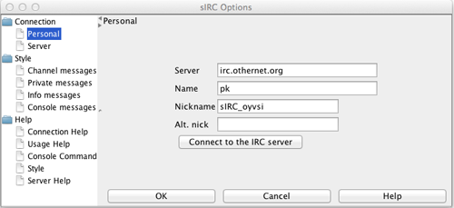
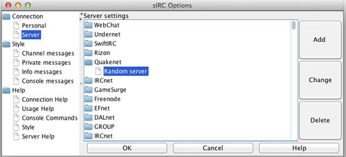

Connection Help
To connect to an irc-server open "Tools->Options". Under "Personal" you input information about yourself which is used to identify yourself to the server and other users of the server.

- Server is the hostname of the server you wish to connect to.
- Name is name you use to identify yourself.
- Nickname is the name you will be shown as in channel and private messages.
- Alt nickname is the nickname which will be used if the nickname is already in use
You can choose a server from the server list.
